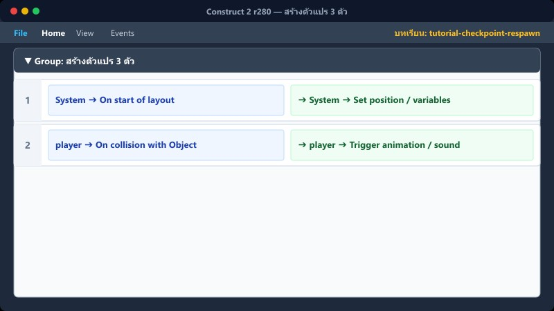
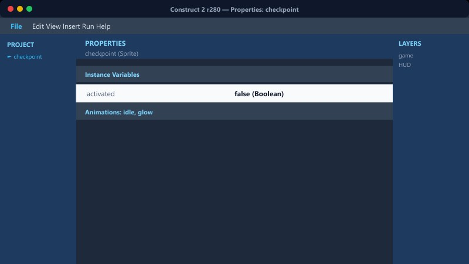
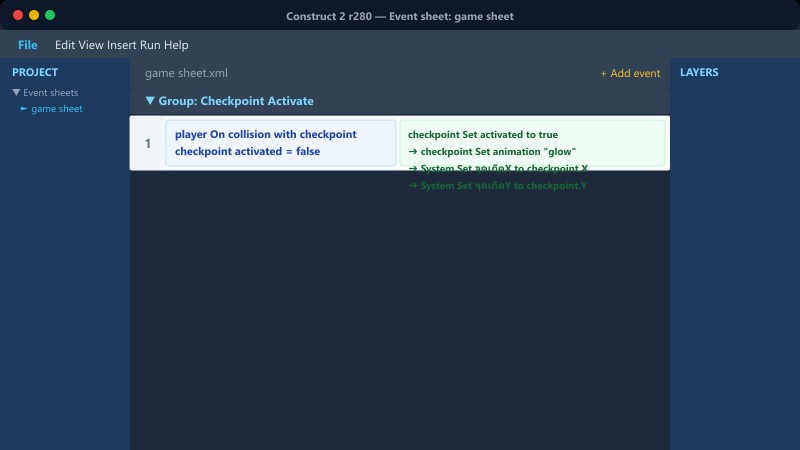
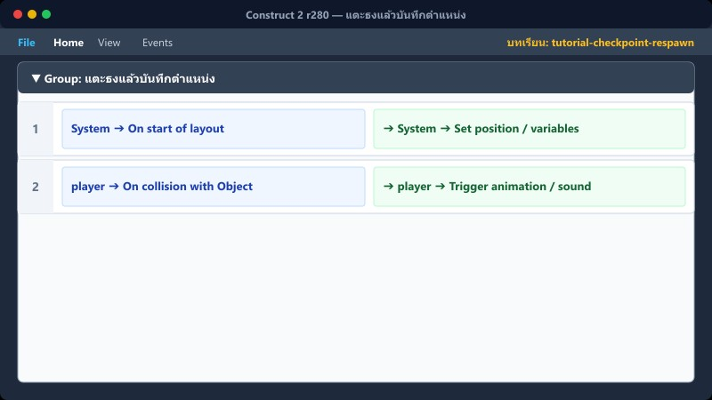
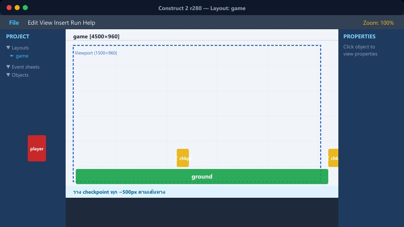
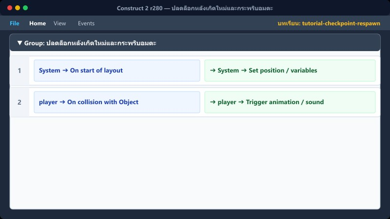
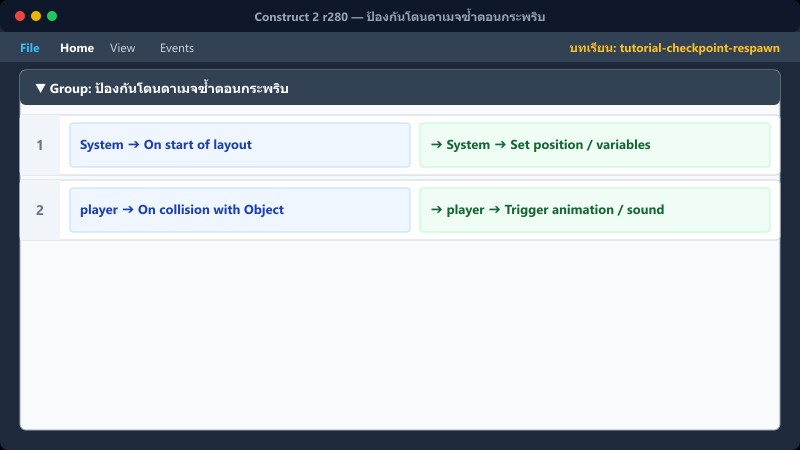
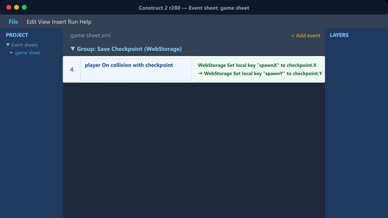

บทที่ 4 • ระบบความต่อเนื่องของด่าน
Checkpoint และการเกิดใหม่
แตะธงเพื่อบันทึกจุดปลอดภัย • ตกฉากแล้วกลับมาจุดล่าสุด • ไม่ต้องเริ่มด่านใหม่
จุดเริ่มCheckpointเกิดใหม่🧍
🚩
🧍
➜
🧍
จำจุดเริ่ม→แตะธง→บันทึก X/Y→ตกแล้วกลับมา
1สร้างตัวแปร 3 ตัว

คลิกขวา Event Sheet → Add global variable
1. ตัวแปรจำตำแหน่งแกน X
Name: จุดเกิดX, Type: Number, Initial value: 0
2. ตัวแปรจำตำแหน่งแกน Y
Name: จุดเกิดY, Type: Number, Initial value: 0
3. ตัวแปรสถานะกำลังเกิดใหม่
Name: กำลังเกิดใหม่, Type: Number, Initial value: 0
X/Y จำตำแหน่ง ส่วนตัวแปรสุดท้ายใช้ล็อกไม่ให้คำสั่งเกิดซ้ำ
📍 ที่ไหนใน C2: game sheet → Add global variable
2จำจุดเริ่มต้นของด่าน

เมื่อเริ่ม Layout ให้อ่านตำแหน่ง player ที่วางไว้
1
System On start of layout
➔ System Set จุดเกิดX to player.X
➔ System Set จุดเกิดY to player.Y
➔ System Set กำลังเกิดใหม่ to 0
ไม่ต้องพิมพ์เลขตำแหน่งเอง เมื่อย้าย player ใน Editor ระบบยังถูกต้อง
3สร้างวัตถุ Checkpoint

เพิ่ม Sprite รูปธง ตั้งชื่อ checkpoint และเพิ่ม Instance variable
คลิกที่ธง > ไปที่ Properties Panel > Instance variables
คลิก + (Add new)
Name: เปิดใช้งานแล้ว
Type: Boolean
Initial value: False (ไม่ต้องติ๊ก)
ธงแต่ละอันจำสถานะของตัวเองได้ เหมาะกับด่านที่มีหลายจุด
4แตะธงแล้วบันทึกตำแหน่ง

2
player On collision with checkpoint
checkpoint Is boolean instance variable เปิดใช้งานแล้ว set
(คลิกขวาที่เงื่อนไขที่สอง เลือก Invert ให้เป็น False)
➔ System Set จุดเกิดX to checkpoint.X
➔ System Set จุดเกิดY to checkpoint.Y - 60
ลบ Y 60 เพื่อให้ player เกิดเหนือธง ไม่เกิดซ้อนกับ Collision ของธง
5แสดงว่าธงทำงานแล้ว
(ใส่ใน Action ต่อจากข้อ 4 ทันที)
➔ checkpoint Set boolean เปิดใช้งานแล้ว to True
➔ checkpoint Set animation "Active"
➔ Audio Play "checkpoint" (not looping)
สร้าง Animation Inactive และ Active คนละสี ผู้เล่นจะเข้าใจทันทีว่าบันทึกสำเร็จแล้ว
6ตกฉากแล้วกลับ Checkpoint

▼ Group: ตัวครละครออกจากฉาก
3
System Compare two values: player.Y > LayoutHeight + 200
System Compare variable กำลังเกิดใหม่ = 0
➔ System Set กำลังเกิดใหม่ to 1
➔ System Subtract 1 from หัวใจ
➔ player Set position to (จุดเกิดX, 700)
➔ player.Platform Set vector Y to 0
ตั้ง Y เป็น 700 เพื่อให้ผู้เล่นเกิดใหม่ตกลงมาจากกลางอากาศเหนือพื้นดิน
📍 ที่ไหนใน C2: game sheet → กลุ่ม "ตัวครละครออกจากฉาก"
7ปลดล็อกหลังเกิดใหม่และกระพริบอมตะ

(ใส่ใน Action ต่อจากข้อ 6 ทันที)
➔ player Flash (On 0.1, Off 0.1, Duration 3.0)
➔ System Wait 0.5 seconds
➔ System Set กำลังเกิดใหม่ to 0
ต้องไปเพิ่ม Behavior Flash ให้กับ player ก่อน จึงจะใช้คำสั่งนี้ได้
📍 ที่ไหนใน C2: player → Behaviors และ game sheet → กลุ่ม "ตัวครละครออกจากฉาก"
8ป้องกันโดนดาเมจซ้ำตอนกระพริบ

4
player On collision with monster
player Is flashing (คลิกขวา Invert เป็นเครื่องหมายกากบาทแดง)
➔ ...คำสั่งลดหัวใจ...
คลิกขวาที่ Is flashing แล้วเลือก Invert (กากบาทแดง) แปลว่า "ถ้าไม่ได้กระพริบอยู่" ถึงจะโดนดาเมจ
📍 ที่ไหนใน C2: game sheet → กลุ่ม "ตัวครละครออกจากฉาก"
⚠️ ข้อผิดพลาดที่พบบ่อย

- ลืมคลิก Invert ที่ Is flashing ทำให้ตอนกระพริบก็ยังเสียเลือดได้
- ลืมติด Behavior Flash ให้ผู้เล่น ทำให้รันเกมแล้ว Error หรือหาคำสั่งไม่เจอ